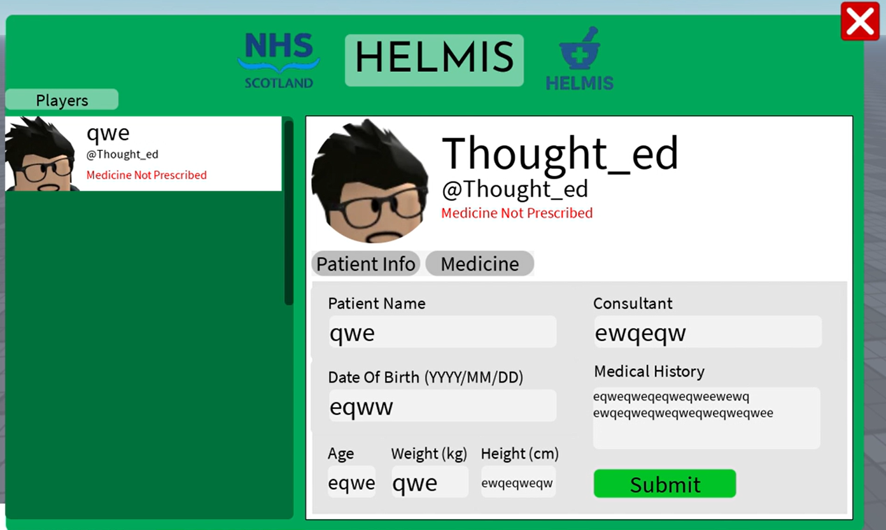
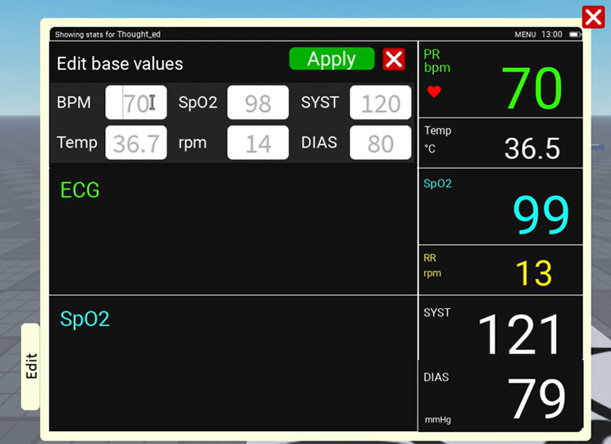

Medical Systems 💉
Healthcare UI and monitoring systems for roleplay games.
Patient Information & Dispensing System
An UI done from scratch. Places all players with the patient role in a list, change patient info, prescribe medicines and spawn them. Includes dynamic UIcorner, UIlists, tables and databases.

Patient Vitals Monitor
UI for watching monitors, variations for monitors, vital storing for each patient, and dynamic transitions between vitals once edited.

Medicine Model (WIP)
A small model I've been working on — early stage of 3D modeling for a future game feature.